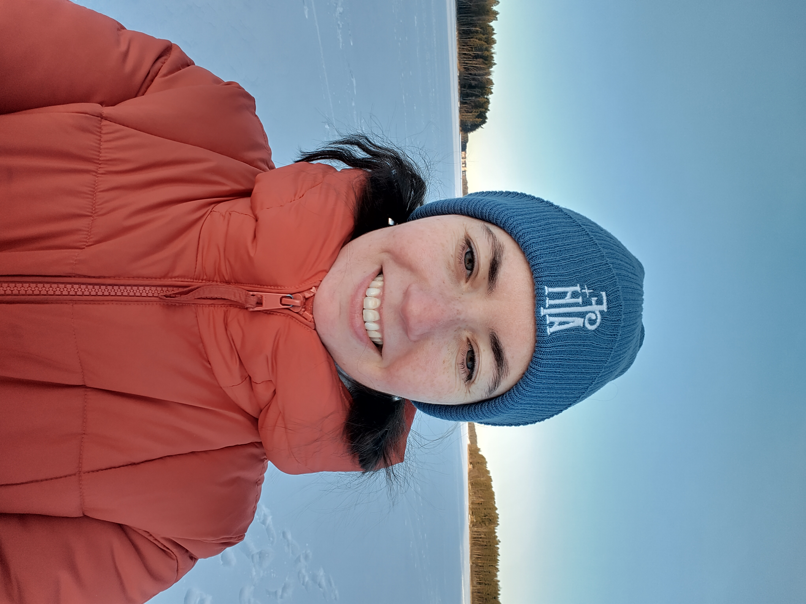

Linguistique historique & sémantique médiévale
Mes recherches se situent dans les domaines de la sémantique et la pragmatique historiques du français médiéval, avec un focus sur les noms humains, et, plus généralement, de la diachronie du français et des langues romanes. Au niveau méthodologique, mes travaux adoptent une approche de la linguistique de corpus outillée, y compris assistée par l'IA.
Mon intérêt envers l'histoire de la langue française est née au cours de mes études de Licence à l'Université d'Etat de Saint-Pétersbourg. Ma thèse, financée par un contrat doctoral et soutenue en 2017 à l'EPHE-PSL, Paris (laboratoire SAPRAT), représentait une étude sémantique des noms baron et chevalier dans un corpus de textes français du XIIe au XVe siècle. Elle a donné lieu à une monographie publiée chez Honoré Champion, récompensée par le Prix Bordin 2022 de l'Académie des Inscriptions et Belles-Lettres.
Mon parcours postdoctoral comprend plusieurs contrats d'enseignement et de recherche dans trois universités françaises. J'ai, en particulier, contribué à trois projets d'humanités numériques : au développement des corpus CoDiF (Corpus de dialogues français XIIIe – XXIe siècle) et ConDÉ (Six siècles de coutumiers normands), ainsi qu'à la création du dictionnaire électronique DFSM (Dictionnaire du français scientifique médiéval). Par ailleurs, j'ai bénéficié du financement ANR Access ERC Starting 2023.